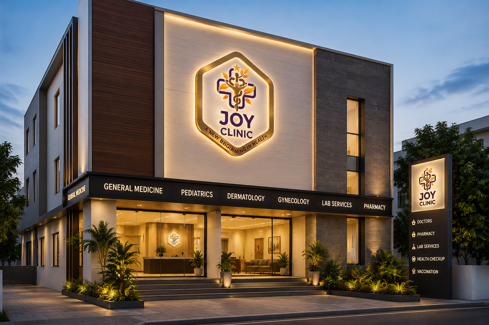

Joy Clinic provides compassionate healthcare, outpatient consultation, laboratory services, elderly home visits and observation care with a patient-first approach.

Consultation and treatment for all age groups.
Pediatric and geriatric observation facilities.
Dressing and wound management room.
Accurate heart monitoring and diagnostics.
Lab staff available from 7:30 AM.
Convenient mobility support for patients.
Elderly patient home consultation services.
2–3 community health camps every year.
Dedicated two-wheeler parking area.
Spacious and comfortable patient waiting zone.
Located at Kalikovil Street, Near Deen Store, Thangachimadam. Joy Clinic is dedicated to delivering accessible, affordable and compassionate healthcare for the community.
Available From
Morning
Evening
Kalikovil Street, Near Deen Store, Thangachimadam
9360394172
8870624484
9:30 AM - 2 PM
5:30 PM - 9:30 PM
Joy Clinic organizes 2-3 free medical camps every year for community wellness.
Learn More